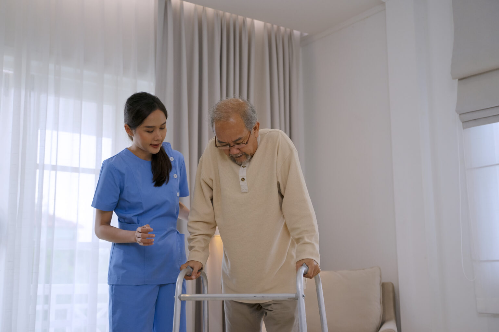

Our Services
Joint & Soft Tissue Injections
Targeted injections to help reduce inflammation, relieve pain, and improve mobility in affected joints and soft tissues.
Acute Back Pain Relief
Evidence-based treatment plans to quickly manage sudden back pain, restore movement, and prevent long-term problems.
Soft Tissue Mobilization
Hands-on techniques to release muscle tension, improve circulation, and support faster healing of soft tissue injuries.
Joint Manipulation
Skilled manual therapy to restore movement, reduce stiffness, and relieve pain in restricted joints.
Rehabilitation & Exercise Therapy
Personalized exercise programs designed to rebuild strength, flexibility, and balance following injury or illness.
Posture Re-education
Guidance and training to correct posture, reduce strain on the body, and prevent recurring pain or injury.

Recovery After Falls
Specialized therapy to restore confidence, balance, and mobility following a fall, with a focus on preventing future incidents.
Post-Operative Rehabilitation (Knee & Hip Surgery)
Structured rehabilitation to aid recovery after orthopaedic surgery, helping you regain mobility, strength, and independence safely.